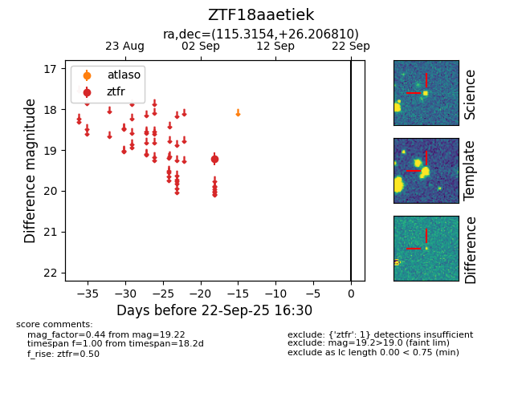

FINK: ZTF18aaetiek
Lasair: ZTF18aaetiek
ALeRCE: ZTF18aaetiek
ZTF18aaetiek (ztf,fink)
equatorial (ra, dec) = (115.3154,+26.20681)
galactic (l, b) = (193.7492,+21.93754)

last ztfr=19.22
1 ztfr detections